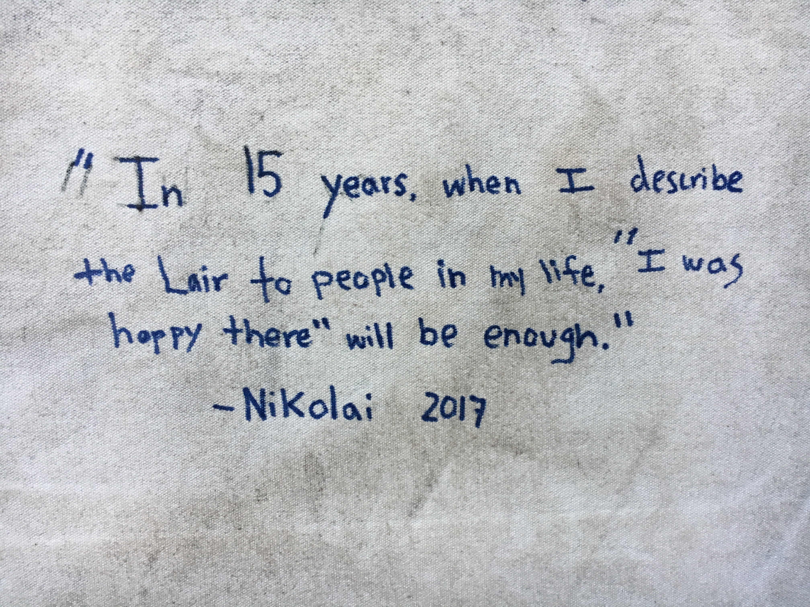
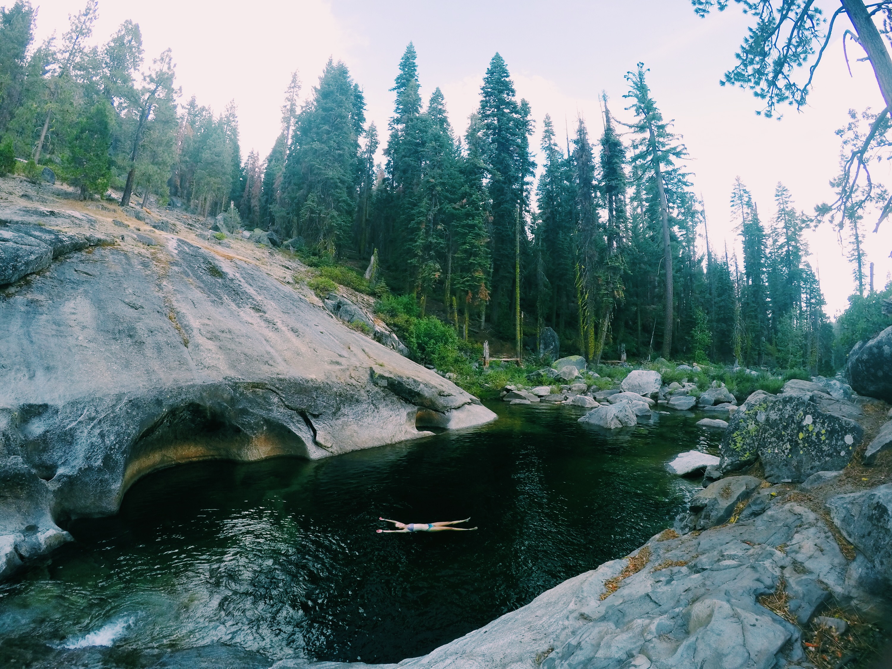
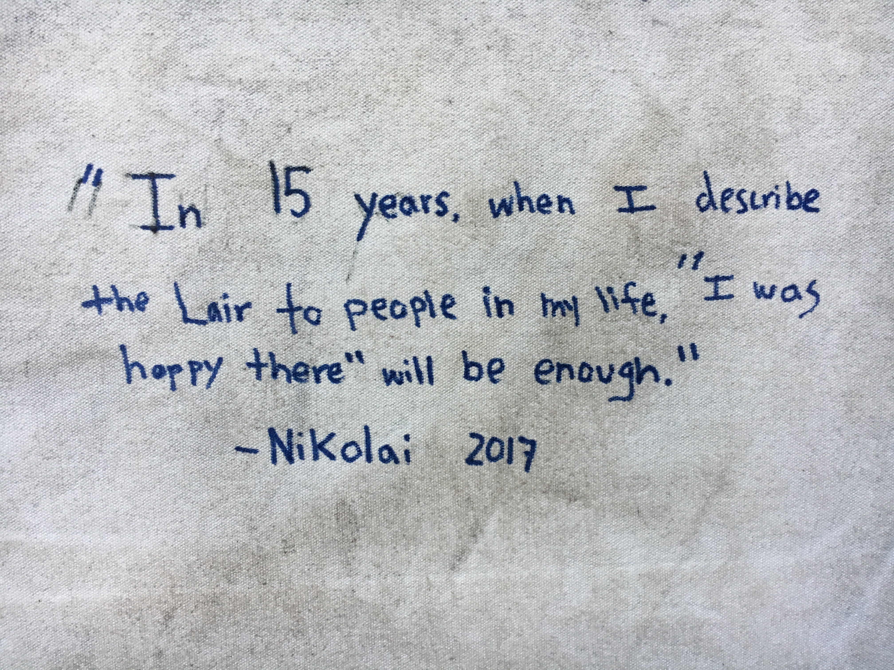
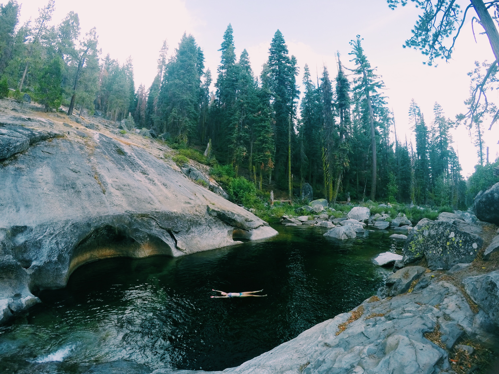

Work at the Lair
People say, “Work at the Lair, you will have the best summer of your life!” But really, what does this mean? Why does working at the Lair change your life? Why is working at the Lair worth it?
The Lair leaves a permanent mark on the rest of your life. Trust me, you want to be a part of it.
You create the richest, most cherished friendships.
Your fellow staffers are not just your co-workers. They become the backbone for the world you live in for the summer. You will have unique experiences that bond you to each member of the staff and heavily rely on them. Each staffer brings something unique, and you have the opportunity to learn from them. These relationships develop past just the summer, and become the friends you lean on for life.
You become a part of a unique family with treasured traditions.
The Lair is a close knit community that brings together people’s love of the outdoors and family. Becoming a Lair staffer will include you in the long and rich staffing tradition. Traditions are a huge part of the Lair. Whether it be the songs, places, or sayings, they are highly valued by the campers and the staffers.
You gain motivated, professional connections.
Part of being part of the Lair community includes the opportunity to network with Cal alumni each week of the summer. Many staffers leave the summer with connections that help them find work after graduation or during the upcoming school year. Utilizing these connections will help you gain professional footing in your desired careers and is a major draw for older staffers.
Working at the Lair will change the way you live.
For three months, you will leave behind the technology of the modern day and sleep under the stars. This will allow you to unplug and get in touch with your adventurous side. You will find that after the summer you are always craving the outdoors, your next escapade, and time with the people who understand you the most.
The Lair is looking for high caliber talent who respect and understand what is expected of them to create the best quality staff each summer.
- always leading by example
- role models to our camp kids
- experts on exceptional customer service
- always dressing up in silly costumes
- passionate and creative
- team-oriented
- take their job responsibilities seriously
Staffers are:
While working at the Lair, you learn a myriad of skills that translate into the real world seamlessly. Your organization skills are enhanced by a rigorous schedule as well as balancing immediate demands, long term requirements, and personal time.
- First aid and CPR certified
- Servsafe certification
- Effective time management
- Improved communication among varying groups of people
Valuable transferable skills include:
To apply, please visit Application Information
  
 